Graveyard Frens 墓地狂热者 Graveyard Frens 是生活在以太坊区块链上的 1111 个随机生成的收藏品的集合。帮助僵尸从邪恶的科学家手中逃脱，作为回报，僵尸将以 $GRAVE 奖励您。1 美元墓地 = 1
Gravis Finance (A) steroid Mining First Ship Collection Gravis Finance 是一个将 DeFi 平台、游戏内资产的 NFT 市场和 Evervoid 游戏结合在一起的生态系统。我们提供所有必要的工具来管理您在任何链上的加密资产。 通常，我们 Gravis Finance 会做一
GRAY ART EDITIONS Samuel Gray 的版本 NFT 艺术品。 在 2022 年 4 月部署的 Manifold 自定义智能合约上作为 ERC1155 代币铸造。 GREY ART EDITIONS NFT - 常见问题（FAQ） ▶ 什么是 GREY ART EDITIONS？ GREY ART EDITIONS 是一个
Gray Boys Gray Boys 是 10,000 个生成 NFT 的集合，它们是 The Mothership 的成员。 Gray Boys' Mothership 是第一个将 NFT 所有权验证、其他蓝筹项目的特权和效用代理给所有 Grey Boy 持有者的实验。Grey Boy 持有者
GRAYCRAFT 作为 GRAYCRAFT 系列的第一个声明，GRAYCRAFT1 是先行者中的先行者，为所有人铺平道路。 我们对 GRAYCRAFT1 的愿景是创造一件可以穿越现实各个方面的艺术品。GR
GRAYCRAFT Collaborations GRAYCRAFT 协作统计 创建于 11 个月前 2 代币供应 5% 费用 过去 7 天内没有售出 GRAYCRAFT Collaborations。 空间体验是一种被分享的特权。发现与我们最喜欢的一些
GRD KRICE 🎂 krice 是 grdswap 的完结的 的 是 是 是 是 是 是 的 一一一一 一一一一 庞庞庞庞。 🎂 Krys 项目是 GRDSWAP 的一个完全随机的 3D NFT PFP 项目。这是 GRDSWAP 的一个新项目，旨在建立一个庞大的社区
Great Apes City Great Apes 俱乐部是 100 个独特的 Great Apes NFT 的集合——生活在 Ethereum/Polygon 区块链上的独特数字收藏品。您的 Great Apes 可兼作您的 Great Apes 俱乐部会员卡，并授予会员专享福利，其中第一个是
Great Canadian Beaver Club (GCBC) The Great Canadian Beaver Club 是一个原创的私人俱乐部，它发布了 10,420 个 NFT 的集合，这些 NFT 存在于以太坊区块链上的 ERC-721 合约上。拥有超过 250 多个由才华横溢的 Dino Tomic 手绘的特征，每个
Great Expectations HENI 很高兴推出 The Great Expectations NFT 系列，其中包含 Damien Hirst 创作的 10,000 件独特艺术品。继他为 Drake 的专辑封面创作的艺术作品之后，NFT 展示了类似表情符号的孕妇网格，其形状
Great Goats: Official Great Goats 是在整个链条中漫游的 11,111 只山羊的独家收藏。做一只山羊。你的身份很重要。生态系统的标签。社区紧随其后 Great Goats Club NFT - 常见问题（FAQ） ▶ 什么是大山
Great Poly Goats Great Poly Goats NFT - 常见问题（FAQ） ▶ 什么是大聚山羊？ Great Poly Goats 是一个 NFT（非同质代币）集合。存储在区块链上的数字艺术品集合。 ▶ 有多少个 Great Poly Goats 代币？ 总
Greedy Gramps OfficiaI NFT Gramps.io NFT 的 Greedy Gramps - 常见问题（FAQ） ▶ Gramps.io 的 Greedy Gramps 是什么？ Gramps.io 的 Greedy Gramps 是一个 NFT（不可替代令牌）集合。存储在区块链上的数字艺术品集合。 ▶ Gramps.io 代币的 Greedy Gramps 有多
greedygoblins.wtf greedygoblins.wtf NFT - 常见问题（FAQ） ▶ 什么是 greedygoblins.wtf？ greedygoblins.wtf 是一个 NFT（Non-fungible token）集合。存储在区块链上
Green Goblins And Shit 有史以来第一个 100% AI 生成具有所有者相关元数据的 PFP 和艺术收藏：当你囤积超过 10 个地精时，它们都会变成同样由 AI 制作的 Mystic Shit，所以你可能真的喜欢它
greendudes_wtf greendudes_wtf NFT - 常见问题（FAQ） ▶ 什么是 greendudes_wtf？ greendudes_wtf 是一个 NFT（非同质代币）集合。存储在区块链上的数字艺术品集合。 ▶ 有多少 greendudes_wtf 代
GREG MIKE GREG MIKE NFT - 常见问题（FAQ） ▶ 什么是 GREG MIKE？ GREG MIKE 是一个 NFT（不可替代代币）集合。存储在区块链上的数字艺术品集合。 ▶ 有多少个 GREG MIKE 代币？ 总共
Gregory Marshall - Miami Collection 设计了一些世界上最好的超级游艇，游艇设计公司 Gregory C. Marshall Naval Architect Ltd. 已经建立了世界顶级造船公司之一的声誉。35 多年来，创始人格雷格·马歇尔 (Greg Marshall) 和他的商业
GRILLZ GANG TICKET 这是一张 Grillz Gang 门票。它为您提供了加入 Grillz Gang 社区的独特而闪亮的可能性。 GRILLZ GANG TICKET NFT - 常见问题（FAQ） ▶ 什么是 GRILLZ 帮派票？ GRILLZ GANG TICKET 是一个 NFT（非同质代币
Grim Soul Genesis Pass Grim Soul Genesis Pass NFT - 常见问题（FAQ） ▶ 什么是冷魂起源通行证？ Grim Soul Genesis Pass 是一个 NFT (Non-fungible token) 集合。存储在区块链上的数字艺术品集合。 ▶ 冷魂创世通行证有多少？ 总共
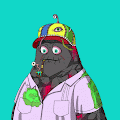 Grimutants Genesis Collection (GGC) Grimutants Genesis Collection 包含 3,333 种怀旧紫色吉祥物的变异版本。这些突变体存在于以太坊网络上，由 100 多个属性特征创建。NFT 艺术本身是在薄荷时以随机生成的方式制作的，
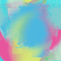 Grinders by Andrew Benson 由 Andrew Benson 统计的研磨机 创建于 10 个月前 100 代币供应 10% 费用 过去 7 天内没有出售 Andrew Benson 的研磨机。 一系列 100 个动画绘画循环。 Andrew Benson NFT 的磨床 - 常见问题（FAQ） ▶ Andrew
Grinuki Grinuki 是居住在多边形链上的 9,999 个化身的集合。 我们很自豪地宣布，我们已经发布了与 Ip 5BE7 Studio 的合作。 对于每一个超过 0.01 eth 的原始 Grinuki，相应代币的艺术
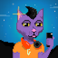 Gritty Cats Official 喵！欢迎来到我们的 3,333 只坚韧猫的 Genesis 系列！这是 90 年代复古猫的叙事驱动的像素艺术集合，由知名创意机构 Layerframe Studios 和艺术家 Gritty Cats 官方 NFT - 常见问题（FAQ） ▶ 什
Grizzly Bear Club (GBC) Grizzly Bear 是 10,000 个独特 NFT 的集合，在 Polygon 区块链上的 ERC-721 标准中随机生成了 +250k 可能的组合。 灰熊俱乐部 (GBC) NFT - 常见问题 (FAQ) ▶ 什么是灰熊俱乐部 (GBC)？ 灰熊俱乐部 (GBC) 是
groms groms NFT - 常见问题（FAQ） ▶ 什么是 groms？ groms 是一个 NFT（不可替代令牌）集合。存储在区块链上的数字艺术品集合。 ▶ 有多少个 groms 代币？ 总共有 799 个
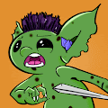 Groovy Goblins Official Groovy Goblins 官方统计 创建于 3 个月前 1,089 代币供应 5% 费用 过去 7 天内没有售出 Groovy Goblins Official。 4444 只时髦的地精已经准备好渗透到地精世界了。degeN @ nighT -
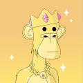 Grown Apes (D.A.S) 猿宝宝长大成人：他们现在有工作和责任。准备接管区块链的 5,000 只成年猿的集合。 Grown Apes (DAS) NFT - 常见问题 (FAQ) ▶ 什么是成年猿 (DAS)？ Grown Apes (DAS) 是一个 NFT (Non-fungible token) 集合
GrowOpz GrowOpz 统计 创建于 5 个月前 500 代币供应 10% 费用 过去 7 天没有售出 GrowOpz。 过去 30 天最畅销的 GrowOpz NFT 500 个手绘 NFT 的集合，其中包含一些街头最经典的菌株！ GrowOpz NFT
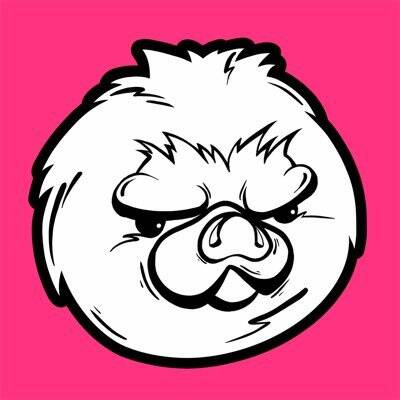 Grumpy Hedgehog Society | GHS 脾气暴躁的刺猬协会 | GHS NFT - 常见问题（FAQ） ▶ 什么是脾气暴躁的刺猬协会 | 全球统一制度？ 脾气暴躁的刺猬协会 | GHS 是一个 NFT（不可替代代币）集合
Grunge Gorblins Grunge Gorblins NFT - 常见问题（FAQ） ▶ 什么是 Grunge Gorblins？ Grunge Gorblins 是一个 NFT（非同质代币）集合。存储在区块链上的数字艺术品集合。 ▶ 存在多少 Grunge Gorblins 代币
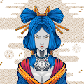 GTH - Maiko GTH - Maiko NFT - 常见问题（FAQ） ▶ 什么是 GTH - 舞妓？ GTH - Maiko 是一个 NFT（非同质代币）集合。存储在区块链上的数字艺术品集合。 ▶ 存在多少 GTH - Maiko 代币？ 总
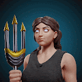 Guilded Gods V2 什么是公会众神 V2？Guilded Gods V2 是一个 NFT（Non-fungible token）集合。存储在区块链上的数字艺术品集合。 Guilded Gods V2 代币有多
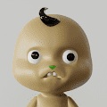 GUMBINO ▶ 什么是甘比诺？GUMBINO 是一个 NFT（不可替代令牌）集合。存储在区块链上的数字艺术品集合。▶ 有多少 GUMBINO 代币？总共有 26 个 GUMBINO NFT。目前，5
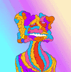 Gumbit by PJ ORourke ▶ PJ ORourke 的 Gumbit 是什么？ PJ ORourke 的 Gumbit 是一个 NFT（不可替代令牌）集合。存储在区块链上的数字艺术品集合。 ▶ 有多少 Gumbit by PJ ORourke 代币？ PJ ORourke NFT 总共有 1,232 个 Gumbi
gumi articles ▶ 什么是gumi篇？ gumi 文章是一个 NFT（非同质化代币）集合。存储在区块链上的数字艺术品集合。 ▶ 有多少个gumi文章代币？ 总共有 1 篇 gumi 文章 NF
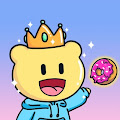 Gummies Gang Gummies Gang - 官方 NFT 在过去 7 天内售出 59 次。Gummies Gang - Official 的总销量为 $864.08。Gummies Gang - Official NFT 的平均价格为 14.6 美元。有 2,972 名 Gummies Gang - 官方所
GUNBULL NFT ▶ 什么是 GUNBULL NFT？GUNBULL NFT 是一个 NFT（非同质代币）集合。存储在区块链上的数字艺术品集合。▶ GUNBULL NFT 代币有多少？总共有 204 个 GUNBULL NFT NFT。目
Gundog Millionaires 认识 Gundog 百万富翁家族 - 一个生成 NFT 项目，由 10,000 个以编程方式创建的独特 gundogs 和其他特别创建的稀有 1/1 稀有物品组成。 稀有度通过使用许多特征和特征被内置到一般
Gundog Pups! 欢迎来到 Gundog Pups！帮助！ Gundog 百万富翁一直在繁殖，现在有 10,010 只独特的 Gundog Pups 在 Polygon 区块链上松散！这些顽皮的 Pups 已经从 Gundog Mansion 逃脱，他们都需要收集 - 他们都需要
HolyShxxt!! 天哪！！ 是一个包含 8,888 名生成足球运动员的集合，由 15 个特征和 480 多个属性组合而成。 它将GameFi x tokennomics x无与伦比的足球游戏体验与社区加入Play-
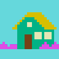 Home Invasion 找到你的家！ 2500张图片合集等着你！每天都会产生10个nft。 这个集合有一个通货紧缩的政策。 每 10 个后续 NFT 在开始时的成本比之前的多 0.001 Ethe
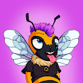 Honey Bee Club Official 2043 年，宇宙中最后一个蜂群被传奇蜜蜂带到了人类和其他生物面前。 传说中的蜜蜂向人类寻求帮助，为最后一个蜂群的蜜蜂提供家园和庇护所，同时他们制定并
Honey Club NFT Honey Club NFT 是 2,222 只甜蜜蜜熊的集合。受 Wonderpals 启发但不隶属于 Wonderpals。 蜂蜜俱乐部NFT NFT - 常见问题（FAQ） ▶ 什么是蜂蜜俱乐部NFT？ Honey Club NF
Honeycombs Deluxe Honeycombs Deluxe 是 Bears Deluxe 系列 NFT 的一部分。 使用它们来“升级”蜜蜂豪华版，在我们的网站上了解更多信息。 蜂窝豪华NFT - 常见问题（FAQ） ▶ 什么是蜂窝豪华版？ Honeycombs
Honor Of The Clash Warriors 项目网站、社交联系方式、项目介绍内容详见：https://opensea.io/collection/clash-warriors Honor Of The Clash Warriors
Honor Of The Clash Warriors 项目网站、社交联系方式、项目介绍内容详见：https://opensea.io/collection/clash-warriors Honor Of The Clash Warriors
hoodie mfer madness 在过去的7天里，没有疯狂的连帽衫出售。 连帽衫疯狂 NFT - 常见问题（FAQ） ▶ 什么是连帽衫疯狂？ Hoodie mfer madness是NFT（不可替代令牌）的集合。

 类固醇采矿船")


 是一个以游戏赚钱的 NFT 游戏世界")